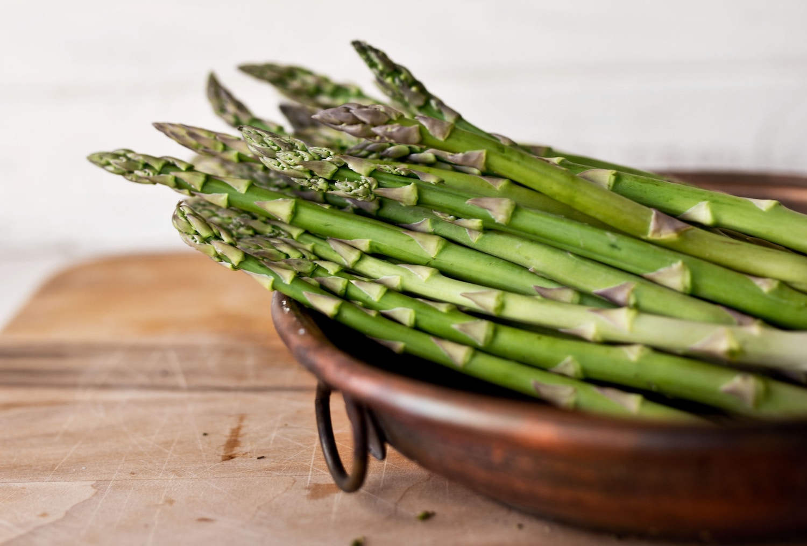
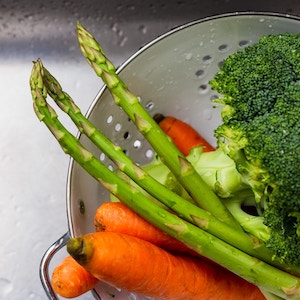
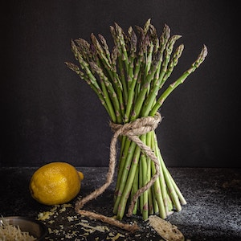
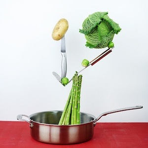
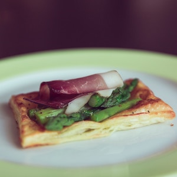
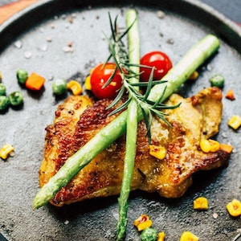

Asparagus
Photo by Markus Spiske on Unsplash
Author: Person.Margaret W Howard
Ingredients
| asparagus | 1 bunch |
|---|---|
| boiling water | 3 quarts |
| butter | 3 tablespoons |
| salt | 1 tablespoon |
| pepper | 1/3 teaspoon |
instructions
- Vegetables should be thoroughly washed and cooked till tender in freshly boiling,
salted water (1/2 tablespoon salt to 1 quart water)

Photo by Stephanie Studer on Unsplash
- Remove white part of stalk and tie in bunches

Photo by Sheila Joy on Unsplash
- Cook about 20 minutes

Photo by Toa Heftiba on Unsplash
- When asparagus is soft, drain well and place on slices of buttered toast which have
been previously dipped in the water in which the asparagus was cooked

Photo by Louis Hansel on Unsplash
- Season with required seasonings

Photo by Mgg Vitchakorn on Unsplash